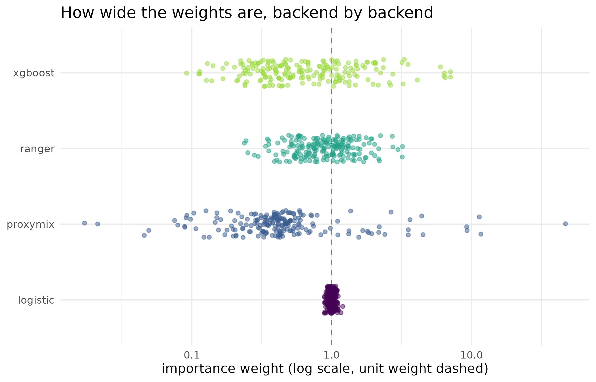

Choosing a density-ratio backend
Source:vignettes/kernR-proxymix-binding.Rmd
kernR-proxymix-binding.RmdWhy
An analyst has run the backdoor-adjusted test and does not like the diagnostics. The causal test reweights my observational sample to look like an intervention, and it told me the effective sample size of those weights had collapsed. There are four backends behind that step and I have no idea which one to pick. What actually differs between them, and how would I tell on my own data which one is behaving? This vignette puts all four on one confounded design and reads the weights they produce, then runs the causal test under each.
What
estimate_density_ratio() is the entry point for every
kernR estimator that reweights an observational sample towards an
interventional one, bd_hsic_test() chief among them. It
offers four backends behind one signature, and
fit_density_ratio() plus
predict_density_ratio() split the same work into a fit step
and a predict step for callers who need to apply the ratio to new
points.
Three of the four are noise-contrastive classifiers. A classifier is
trained to tell the joint sample (x, z) from a
product-of-marginals sample (x_permuted, z), and the
density ratio is recovered from its calibrated class probabilities.
logistic is the default and fits a linear logit, which is
robust on smooth unimodal densities and cheap. ranger fits
a random forest, and xgboost gradient-boosted trees; both
are flexible non-linear alternatives, and both need their own
package.
The fourth, proxymix, is parametric. It fits one
Gaussian mixture to the joint cloud and a second to the
product-of-marginals cloud, then evaluates the analytic ratio of the two
mixture densities at each observation. There is no classifier
calibration step, the ratio is closed form in the fitted parameters, and
the fit carries its own convergence diagnostics;
bd_hsic_test() gates its verdict on them. The proxymix
package is a separate MIT-licensed package, consumed here as a soft
dependency through requireNamespace(), so the binding is
one way and kernR installs without it.
effective_sample_size() is the diagnostic that decides
whether any of this worked, and plot_weights() draws the
weight distribution behind it.
Do
Which backends this build carries
has_ranger <- requireNamespace("ranger", quietly = TRUE)
has_xgboost <- requireNamespace("xgboost", quietly = TRUE)
has_proxymix <- requireNamespace("proxymix", quietly = TRUE)
c(ranger = has_ranger, xgboost = has_xgboost, proxymix = has_proxymix)
#> ranger xgboost proxymix
#> TRUE TRUE TRUEA confounded design
A synthetic design of 200 observations: a two-column Gaussian confounder, a treatment that is a linear-Gaussian function of its first column, and an outcome carrying a genuine causal effect of 0.7 per unit of treatment plus a confounded path through the second column.
The four ratios
dr_fits <- list(
logistic = estimate_density_ratio(x_treat, z_conf,
method = "logistic", seed = 1L)
)
if (has_ranger) {
dr_fits$ranger <- estimate_density_ratio(x_treat, z_conf,
method = "ranger", seed = 1L)
}
if (has_xgboost) {
dr_fits$xgboost <- estimate_density_ratio(x_treat, z_conf,
method = "xgboost", seed = 1L)
}
if (has_proxymix) {
dr_fits$proxymix <- estimate_density_ratio(
x_treat, z_conf, method = "proxymix", proxymix_components = 2L,
seed = 1L
)
}
names(dr_fits)
#> [1] "logistic" "ranger" "xgboost" "proxymix"| Backend | ESS | ESS / n | Smallest weight | Largest weight |
|---|---|---|---|---|
| logistic | 199.4 | 0.997 | 0.886 | 1.202 |
| ranger | 156.0 | 0.780 | 0.238 | 3.213 |
| xgboost | 81.3 | 0.407 | 0.092 | 7.079 |
| proxymix | 14.3 | 0.071 | 0.017 | 46.966 |
The figure: the weights behind the diagnostic
weights_long <- do.call(rbind, lapply(names(dr_fits), function(nm) {
data.frame(backend = nm, weight = dr_fits[[nm]]$weights,
stringsAsFactors = FALSE)
}))
ggplot2::ggplot(
weights_long, ggplot2::aes(x = weight, y = backend, colour = backend)
) +
ggplot2::geom_vline(xintercept = 1, colour = "grey50",
linetype = "dashed") +
ggplot2::geom_jitter(height = 0.18, alpha = 0.5, size = 1.3) +
ggplot2::scale_x_log10() +
ggplot2::scale_colour_viridis_d(name = NULL, end = 0.85,
guide = "none") +
ggplot2::labs(
x = "importance weight (log scale, unit weight dashed)",
y = NULL, title = "How wide the weights are, backend by backend"
) +
ggplot2::theme_minimal()
Distribution of the density-ratio weights produced by each available backend on the same design, on a logarithmic scale, with the unit weight that a perfectly balanced sample would carry marked. The effective sample size in the table above is a summary of exactly this spread: the wider the distribution, the fewer observations are really contributing.
The causal test under each backend
Any backend whose weights collapse makes bd_hsic_test()
raise its effective-sample-size warning. The runner below captures those
messages instead of letting them print as conditions, so that they can
be quoted where the prose reads them and the vignette still renders
without warnings.
gate_messages <- character(0)
run_bd <- function(method) {
withCallingHandlers(
bd_hsic_test(
x_treat, y_out, z_conf, density_ratio = method,
n_permutations = 199L, seed = 1L
),
warning = function(w) {
gate_messages[[method]] <<- conditionMessage(w)
invokeRestart("muffleWarning")
}
)
}
bd_fits <- lapply(stats::setNames(nm = names(dr_fits)), run_bd)
names(gate_messages)
#> [1] "proxymix"| Backend | Statistic | p-value | ESS on the test split | Declined |
|---|---|---|---|---|
| logistic | 0.0211 | 0.155 | 99.9 | FALSE |
| ranger | 0.0227 | 0.005 | 77.7 | FALSE |
| xgboost | 0.0165 | 0.005 | 40.7 | FALSE |
| proxymix | 0.0062 | 0.320 | 3.4 | TRUE |
Read
The backend choice changes the answer on this design, which is the most useful thing this comparison has to report. The weights come out very differently: the effective sample size runs from 14.3 to 199.4 out of 200 observations, 7 to 100 per cent, and the largest single weight from 1.2 to 46.97. The figure shows the same fact as a picture: logistic produces a tight cloud around the unit weight, and proxymix a cloud spanning orders of magnitude.
Those weights carry through to the verdict. The 4 backends return
p-values of logistic 0.155, ranger 0.005, xgboost 0.005, proxymix 0.32,
so on a design with a causal effect of 0.7 per unit built into it, 2 of
4 detect it. The mechanism is not only that the statistic changes – the
four statistics all sit between 0.0062 and 0.0227, within a factor of
3.7 of each other – but that the null changes with it. Without
an explicit cluster_id, bd_hsic_test() builds
its permutation clusters from the density-ratio weights themselves, so a
backend that produces different weights is scored against a different
null distribution. Two backends can therefore agree on what they
measured and disagree on what it means.
The proxymix row is the one to read closely. Its
effective sample size on the test split falls to 3.4, the gate fires,
and the result is stamped as an abstention: TRUE in the
Declined column. A two-component mixture is the wrong model
for a joint density with one mode, the fitted ratio is extreme where the
two mixtures disagree in the tails, and the package refuses to stand
behind the p-value that follows rather than reporting 0.32 as a verdict.
The gate says so in its own words:
bd_hsic_test(): ESS (3.4) is below 10% of n_test (100). The weighted test statistic is dominated by a small number of high-weight observations; the resulting p-value is not a reliable verdict. Increase n, switch density_ratio backend, or tighten the design.
That is the behaviour to want from a backend that has been handed a density it cannot represent. Does the treatment cause the outcome, or do they share a cause? shows the same gate firing for the opposite reason, on a design with too many covariates rather than the wrong mixture.
Limits
This is one synthetic design with a smooth, unimodal, two-dimensional joint density and 200 observations. It cannot rank the four backends in general, and the disagreement above should be read as a demonstration that backend choice is consequential, not as a ranking to carry to another data shape: a design with a multimodal joint density would be expected to reverse part of it. The classifier backends have a tuning surface this vignette does not touch – forest size, boosting depth and rounds, the noise-sample count – and only the defaults are compared. The proxymix backend is run with two mixture components against a design with one mode per cloud, which is deliberately the wrong specification and is why its weights are extreme; a fair comparison on a multimodal design would need its own vignette. Nothing here establishes which p-value is correct: the design has a real causal effect, so a backend that fails to detect it has lost power, but this single run cannot separate lost power from an unlucky permutation draw. Above all, no backend can establish that the adjustment set is complete, and an incomplete one produces a confident wrong answer under every backend at once.
When to reach for which
The classifier backends are the default for good reasons: they
tolerate a misspecified density, scale to a high-dimensional adjustment
set, and their calibration is well understood. logistic is
the right first choice, with ranger or xgboost
when the conditional density is plainly non-linear in the
confounders.
Reach for proxymix when the joint density is plausibly
multimodal, as it is under a multi-regime climate, a
paddock by variety design with distinct production zones, or a cohort
with separable subpopulations, where a two-component mixture represents
the structure cleanly and a classifier smears across the modes; when a
parametric ratio is wanted whose components can be
inspected or handed to a downstream Bayesian step through
proxymix::gmm_target_from_posterior(); or when classifier
calibration is unreliable on the sample at hand, because it is small,
because the joint against marginal split is sharply imbalanced, or
because the features are pathologically scaled.
What to read next
Does the treatment cause the outcome, or do they share a
cause? is the test this backend choice feeds, and shows the
effective-sample-size floor declining a verdict outright. A
treatment that changes the spread and not the mean uses the related
propensity-model choice for a binary treatment. From a coarse grid
to a paddock uses proxymix from the other direction, as the fitter
for the Gaussian-mixture prior that aggregate_downscale()
inverts.
References
- Hoek, J. van der, & Elliott, R. J. (2024). Mixtures of multivariate Gaussians. Stochastic Analysis and Applications. DOI: 10.1080/07362994.2024.2372605.
- Hu, R., Sejdinovic, D., & Evans, R. J. (2024). A kernel test for causal association via noise contrastive backdoor adjustment. Journal of Machine Learning Research, 25(160), 1-56.
Reproduce
Seed 2026 for the confounded design;
seed = 1L passed to every density-ratio fit and every test,
so the classifier fits, the mixture fits and the permutation draws are
all fixed. Package versions follow.
sessionInfo()
#> R version 4.6.1 (2026-06-24)
#> Platform: x86_64-pc-linux-gnu
#> Running under: Ubuntu 24.04.5 LTS
#>
#> Matrix products: default
#> BLAS: /usr/lib/x86_64-linux-gnu/openblas-pthread/libblas.so.3
#> LAPACK: /usr/lib/x86_64-linux-gnu/openblas-pthread/libopenblasp-r0.3.26.so; LAPACK version 3.12.0
#>
#> locale:
#> [1] LC_CTYPE=C.UTF-8 LC_NUMERIC=C LC_TIME=C.UTF-8
#> [4] LC_COLLATE=C.UTF-8 LC_MONETARY=C.UTF-8 LC_MESSAGES=C.UTF-8
#> [7] LC_PAPER=C.UTF-8 LC_NAME=C LC_ADDRESS=C
#> [10] LC_TELEPHONE=C LC_MEASUREMENT=C.UTF-8 LC_IDENTIFICATION=C
#>
#> time zone: UTC
#> tzcode source: system (glibc)
#>
#> attached base packages:
#> [1] stats graphics grDevices utils datasets methods base
#>
#> other attached packages:
#> [1] kernR_0.8.2
#>
#> loaded via a namespace (and not attached):
#> [1] mvnfast_0.2.8 Matrix_1.7-5 gtable_0.3.6
#> [4] jsonlite_2.0.0 compiler_4.6.1 ranger_0.18.0
#> [7] Rcpp_1.1.2 jquerylib_0.1.4 systemfonts_1.3.2
#> [10] scales_1.4.0 textshaping_1.0.5 yaml_2.3.12
#> [13] fastmap_1.2.0 lattice_0.22-9 ggplot2_4.0.3
#> [16] R6_2.6.1 generics_0.1.4 proxymix_0.15.2
#> [19] knitr_1.52 desc_1.4.3 bslib_0.12.0
#> [22] RColorBrewer_1.1-3 rlang_1.3.0 cachem_1.1.0
#> [25] xfun_0.60 fs_2.1.0 sass_0.4.10
#> [28] S7_0.2.2 otel_0.2.0 viridisLite_0.4.3
#> [31] cli_3.6.6 withr_3.0.3 pkgdown_2.2.1
#> [34] PESTO_0.10.1 digest_0.6.39 grid_4.6.1
#> [37] xgboost_3.2.1.1 lifecycle_1.0.5 vctrs_0.7.3
#> [40] evaluate_1.0.5 glue_1.8.1 data.table_1.18.6.1
#> [43] farver_2.1.2 ragg_1.5.2 rmarkdown_2.32
#> [46] tools_4.6.1 htmltools_0.5.9